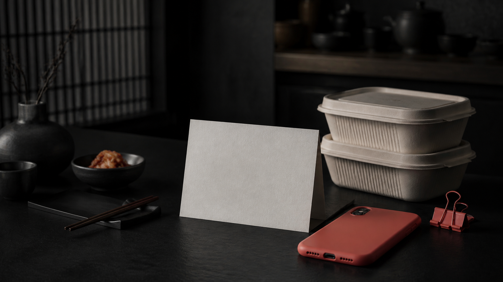

구글 지도 '주문' 버튼이 다른 앱으로 열립니다 — 11월 5일, 끌 권한이 점주에게 생겼습니다
구글 소상공인 게시판(2026.11.05)으로 확인된 변화입니다. 레스토랑 프로필의 서드파티 주문 링크를 점주가 직접 끌 수 있게 됐고, 메뉴에는 글루텐프리·유당프리·할랄·코셔 표시가 붙습니다. 연말 주문이 몰리기 전에 볼 네 칸을 정리했습니다.

구글 지도에서 우리 가게의 '주문'을 누르면, 손님은 우리 가게가 아니라 배달앱의 주문서로 갑니다. 2026년 11월 5일 구글 소상공인 게시판 공지로 확인된 변화입니다. 이제 그 연결을 점주가 프로필 화면에서 직접 끌 수 있습니다. 오늘 할 일은 하나입니다. 손님처럼 지도에서 내 가게를 열어 '주문'과 '예약' 버튼이 어디로 가는지 직접 눌러 보는 것.
이 버튼은 오래전부터 문제였습니다. 그런데 지금까지는 배달 플랫폼마다 따로 요청해서 끊어야 했습니다. 11월부터는 구글 안에서 정리할 수 있게 됐다는 점이 다릅니다.
손님이 누르는 '주문'은 누구의 주문입니까#
구글 프로필에는 업종에 따라 '예약', '주문', '구매' 같은 버튼이 붙습니다. 음식점은 주문, 미용실이나 공방은 예약이 그 자리를 차지합니다. 문제는 이 버튼이 우리가 만든 페이지가 아니라 연결된 외부 업체의 주소로 열릴 때입니다.
배달앱과 연동된 가게라면 손님이 구글에서 '주문'을 누르는 순간 그 앱의 주문서로 넘어갑니다. 주문은 그 앱의 몫이 되고, 정산과 수수료도 그 앱의 기준을 따릅니다. 손님 입장에서는 편합니다. 가게 입장에서는, 연말처럼 주문이 몰리는 시기에 그 한 번의 클릭이 어디로 가는지가 매출 구조를 바꿉니다.
11월 5일 구글의 리사 랜즈먼이 소상공인 게시판에 올린 안내에는 이렇게 적혀 있습니다. "이제 비즈니스 프로필 대시보드에서 특정 서드파티 배달 업체를 직접 관리하고 해제할 수 있습니다. 배달 플랫폼마다 연결을 끊어 달라고 요청할 필요가 없습니다."
다만 스위치가 하나가 아닙니다. 이 기능을 다룬 해외 보도(Search Engine Table, 2026.11.07)에 따르면 업체별 설정에 픽업과 배달 스위치가 따로 있고, 둘 다 꺼야 그 업체가 프로필에서 완전히 숨습니다. 픽업만 껐는데 사라졌다고 생각하기 쉬운 구조입니다. 같은 기사에서 구글 제품 매니저는 국가 제한이 없다고 답했지만, 한국 계정 화면에 언제 어떤 모습으로 뜨는지는 구글이 따로 밝히지 않았습니다.
연말에는 이 버튼이 특히 자주 눌립니다. 단체 주문은 전화로 들어오지만, 처음 가게를 알게 되는 경로는 지도인 경우가 많습니다. 손님이 지도에서 본 메뉴와 연결된 앱의 메뉴가 다르면 그 차이는 우리 가게의 신뢰로 남습니다. 그래서 버튼을 끄는 일보다 먼저 할 일은, 지금 열리는 화면의 메뉴와 가격이 우리 기준과 같은지 확인하는 것입니다.
11월에 같이 바뀐 메뉴 칸: 식이 표시 네 개#
같은 안내에서 음식점 메뉴 편집기 이야기도 나옵니다. 기존 채식·비건 표시에 글루텐프리, 유당프리, 할랄, 코셔가 더해졌습니다. 구글은 "gluten-free dinner near me" 같은 검색에서 메뉴 항목이 눈에 띄게 해 준다고 설명합니다.
주의할 점도 함께 적혀 있습니다. 할랄과 코셔는 인증을 받은 곳에만 표시하라는 것입니다. 이 표시는 손님이 그 자리에서 선택을 결정하는 근거가 됩니다. 확인 없이 달면 클레임이 되고, 그 클레임은 리뷰로 남습니다.
연말 주문 전에 손님처럼 눌러 볼 네 칸#
| 확인할 칸 | 어디서 | 무엇을 보나 |
|---|---|---|
| 주문 링크 | 프로필 대시보드의 주문·배달 제공업체 설정 | 지금도 쓰는 업체인가, 픽업·배달 중 무엇이 켜져 있나 |
| 예약 링크 | 대시보드의 예약·약속 링크 | 닫은 예약 채널이 그대로 붙어 있지 않은가 |
| 메뉴 식이 표시 | 메뉴 편집에서 개별 메뉴 | 표시한 항목에 실제로 인증·확인이 있는가 |
| 혜택 칩 | 구글 검색의 장소 시트 | 내가 넣지 않은 할인이 붙어 있지 않은가 |
마지막 칸은 앞선 글에서 따로 다뤘습니다. 내가 등록하지 않은 할인이 노출되는 구조와 삭제 요청 절차는 구글 지도 '전화' 옆에 '메시지'가 생겼습니다에 정리해 두었습니다. 지도에서 빈 칸을 채우는 기본 순서는 구글 지도에서 우리 가게가 비어 보이는 이유를 보시면 됩니다.
끄기 전에 계산해야 할 것#
주문 버튼을 끄는 일은 손님을 줄이는 일이 될 수도 있습니다. 구글도 안내문에서 "손님은 이미 결제 수단이 저장된 앱을 선호한다"며, 신뢰하는 업체를 섞어 두는 편이 유리할 수 있다고 적었습니다. 그래서 '다 끈다'가 아니라 '무엇을 남길지 정한다'가 맞습니다.
정리하면 이렇습니다.
- 남길 업체는 우리가 정합니다. 화면에서 끌 수 있게 됐다는 건, 반대로 말하면 껐다는 사실을 우리가 기억해야 한다는 뜻입니다.
- 구글에서 끄는 것과 앱에서 내리는 것은 다릅니다. 이 설정은 프로필의 연결만 정리합니다. 그 앱 안의 매장 정보와 주문은 별개로 관리해야 합니다.
- 클릭은 보이지만 주문은 안 보입니다. 프로필 성과에서 링크 클릭은 확인할 수 있지만, 그 클릭이 실제 주문인지, 얼마짜리 주문인지는 구글이 알려주지 않습니다. 앱 정산서와 나란히 놓고 봐야 합니다.
- 아직 안 보일 수 있습니다. 레스토랑 메뉴 도구는 음식점 업종 중심이고, 주문 업체 관리 화면의 국가·업종 적용 범위는 공지에 명시되지 않았습니다. 계정에 항목이 없다고 해서 잘못된 설정은 아닙니다.
자주 묻는 질문#
주문 버튼을 끄면 배달앱에서도 우리 가게가 사라지나요?#
아닙니다. 구글 프로필에 붙은 연결만 정리됩니다. 그 배달앱 안의 매장 노출과 주문은 앱에서 따로 관리해야 합니다.
어디에서 끄나요?#
비즈니스 프로필 대시보드의 주문·배달 제공업체 설정입니다. 업체별로 픽업과 배달 스위치가 따로 있어, 둘 다 꺼야 프로필에서 완전히 사라집니다.
우리 업종도 쓸 수 있나요?#
주문 링크 관리는 음식점 쪽에서 먼저 쓰이는 기능이고, 식이 표시는 메뉴 편집기가 있는 음식점 업종의 도구입니다. 미용실·공방처럼 예약으로 운영하는 가게는 예약 링크가 같은 역할을 합니다.
식이 표시는 그냥 달아도 되나요?#
글루텐프리·유당프리는 조리 기준을 확인해 표시하고, 할랄·코셔는 인증을 받은 곳에만 달아야 합니다. 구글 안내에도 같은 조건이 붙어 있습니다.
마무리#
연말 주문은 대개 12월에 몰리지만, 손님이 어느 버튼을 누를지는 그 전에 이미 정해집니다. 오늘 15분이면 지도에서 내 가게를 열어 버튼 네 개를 눌러 볼 수 있습니다.
눌러 보다가 어디로 연결되는지 헷갈리면 카카오톡 채널 (새 탭에서 열림)로 지도 화면을 보내 주세요. 어느 링크를 남기고 무엇을 끄면 되는지 한 장으로 정리해 드립니다.
KEEP READING
이어서 읽기
같은 흐름에서 이어지는 글입니다. 지금 매장에 해당하는 지점부터 읽으시면 됩니다.
구글 지도 '전화' 옆에 '메시지'가 생겼습니다 — 11월에 조용히 바뀐 세 칸
2026년 11월 구글 비즈니스 프로필에서 조용히 바뀐 세 가지를 정리했습니다. 지도 상단의 메시지 버튼, 문장으로 만드는 영업시간, 그리고 내가 넣지 않았는데 붙는 혜택 칩까지. 오늘 15분 점검 순서입니다.

지도 필터에서 빠진 가게는 목록에 없습니다 — 사장님이 켜야 하는 다섯 칸
손님은 '수원 단체석'을 검색어로 치지 않고 지도 필터를 켭니다. 네이버 지도·카카오맵 필터에 우리 가게가 걸리려면 어떤 칸을 채워야 하는지, 오늘 30분 안에 점검할 다섯 칸을 정리했습니다.